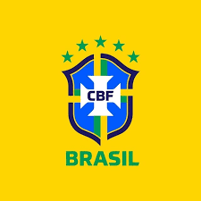

A Seleção Brasileira de Futebol, também carinhosamente chamada de Canarinho
por causa de seu famoso uniforme amarelo, é a equipe nacional que representa
o Brasil em competições internacionais de futebol.
Organizada pela CBF (Confederação
Brasileira de Futebol), ela reúne os melhores jogadores brasileiros para disputar torneios
como a Copa do Mundo e a Copa América.
O Brasil é considerado o país do futebol, esporte que faz parte da cultura e da
identidade do povo brasileiro. Nas ruas, nas praias e nos campos, o futebol está
presente no dia a dia de milhões de brasileiros, e a Seleção é o símbolo maior dessa
paixão nacional.